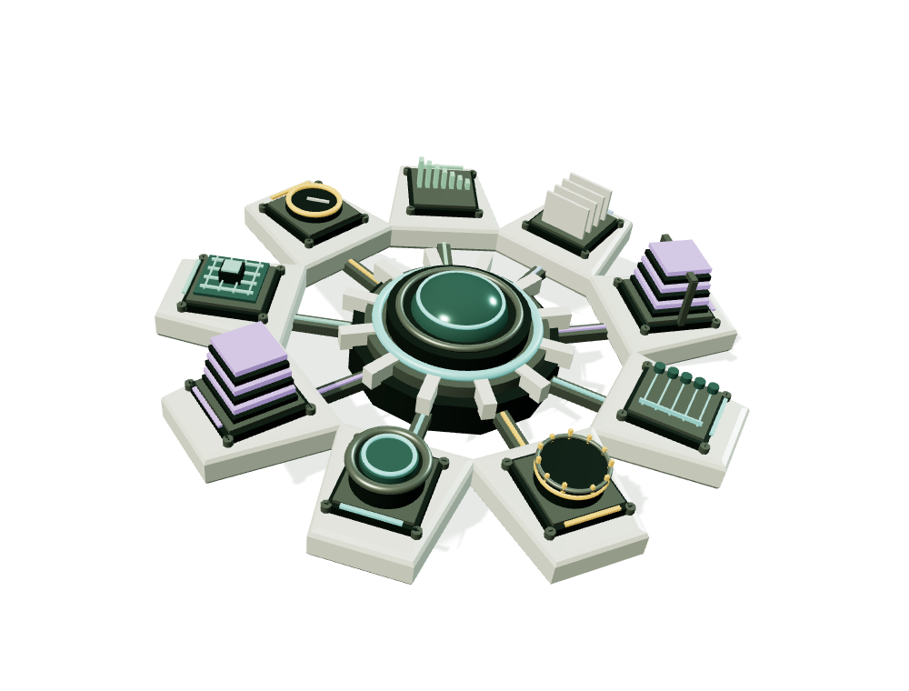
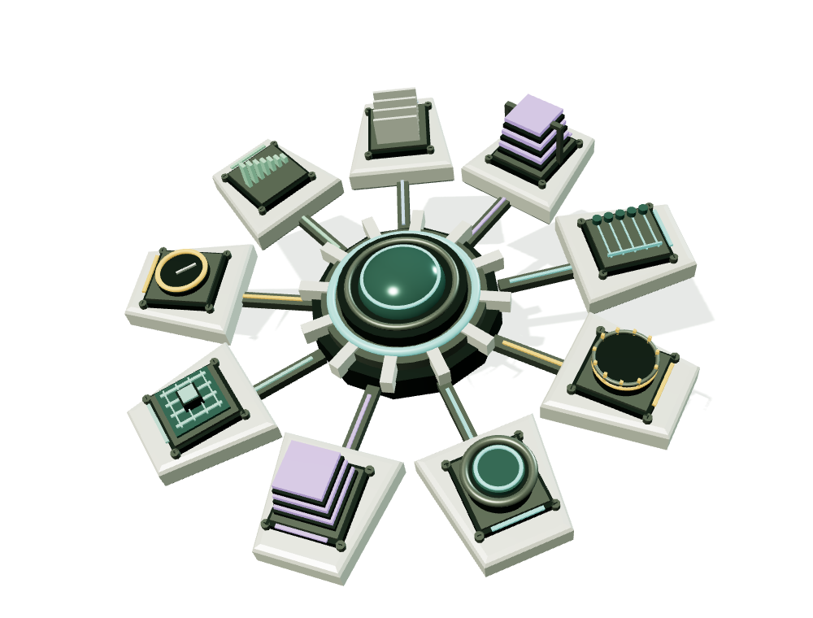
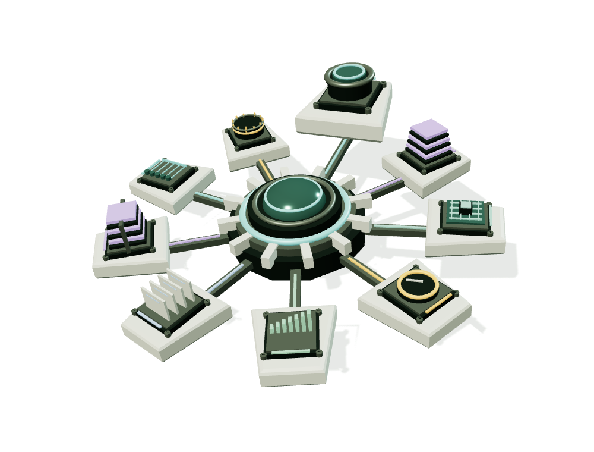
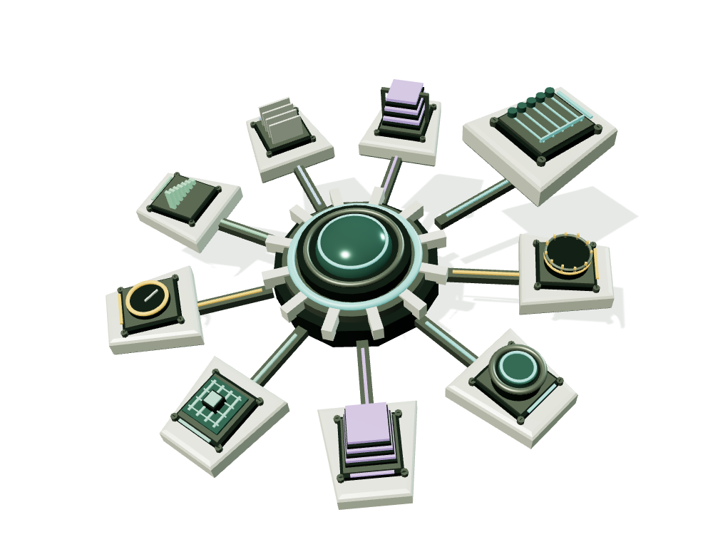
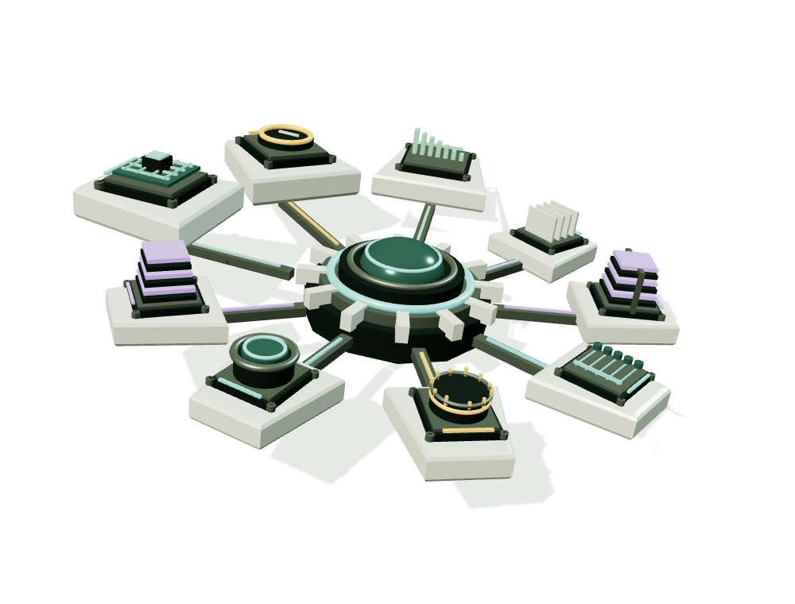
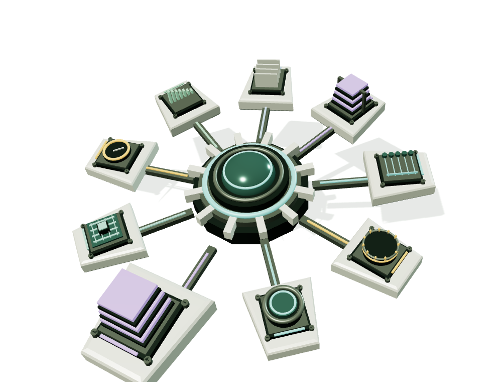
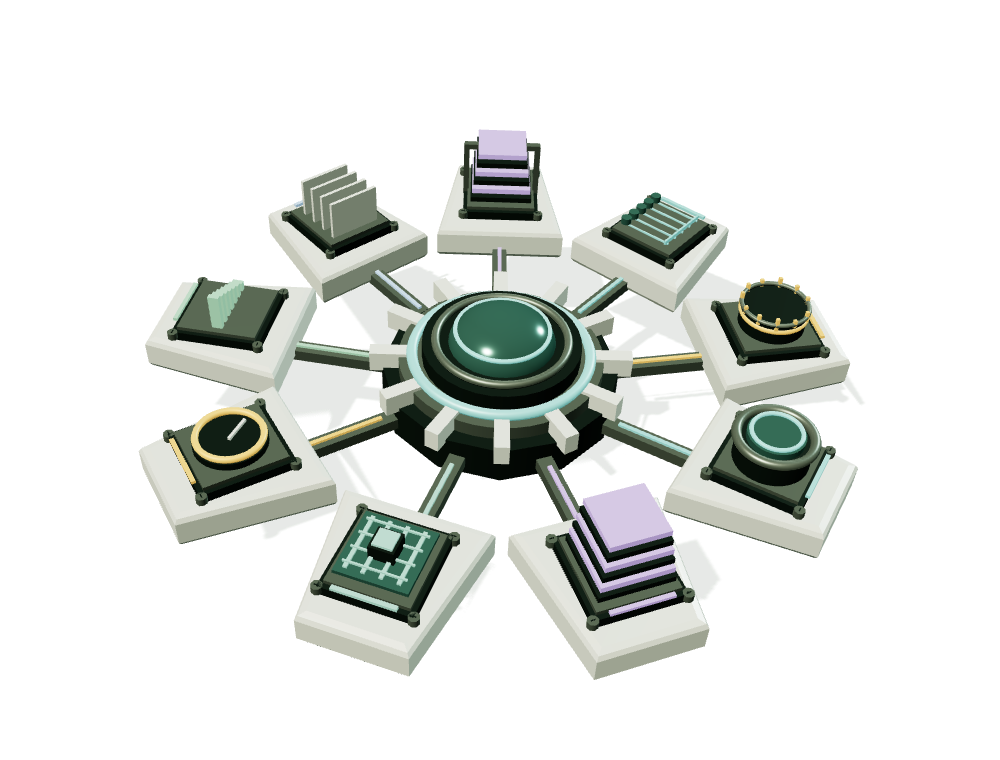
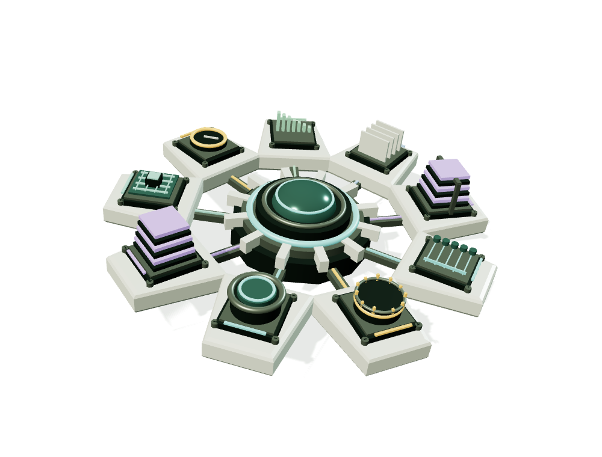

AUGUST 2026 VOL. 01 / ENGINEERING SYSTEMS

09 MODULES · 01 DECISION CORE
02 / THE MISSING CONNECTION
看見一個數字。
還不等於
理解整個現場。
瑕疵、感測異常、需求變化與模型回答，往往各自成立。工程判斷需要知道：它們從哪裡來，又如何影響下一步。

03 / PERCEPTION
先看清楚。
再做判斷。
把缺陷留在影像上，把安全狀態留在時間軸上。第一層證據，從現場建立。
Surface AOI Inspector
C# 與 ONNX Runtime 整合，在官方測試集上辨識表面瑕疵。量產前仍需依實際光學條件校正。
原專案實測 · KSDD2 測試集 · 非量產允收值

04 / TRACEABLE INTELLIGENCE
每一個回答，
都有來處。
資料先通過契約，模型再通過治理。回答必須附上引用，資訊不足時保留人工接手。
Retail Data Hub
八個來源進入 SQL／ETL 管線，以資料契約與品質閘門阻擋不合格輸入，保留來源到輸出的血緣。
- INPUT
- 來源表、批次識別、驗證規則
- OUTPUT
- 品質結果、標準化資料、血緣與稽核摘要

05 / POSSIBLE FUTURES
把不確定，
變成可比較。
需求、風險與工程餘裕，以同一個情境重新閱讀。選擇改變，曲線與判斷也一起改變。
穩定供需，保留餘裕。
合成情境需求維持基準，產能保留彈性；風險與 EDA 負載採穩定情境。曲線是敘事示意，不是即時預測。

06 / MODEL ENGINEERING
更快的模型，
值得發布嗎？
ModelForge-TW · 繁中設備事件適配平台。微調、量化、評估與登錄，以品質門檻回答取捨。
品質基準通過。
RELEASEDQLoRA v5 通過完整品質與安全門檻，保留為正式發布版本。跨引擎延遲與分數僅作描述性比較。
本機真實推論 · 原創合成事件 · 210 test + 14 challenge · 192 tokens · policy-v2

07 / NOTHING WITHOUT EVIDENCE
讓成果，
經得起追問。
點開一個證據點，回到來源、條件與限制。實測、合成情境與原型各有清楚的適用範圍。

08 / READY TO EXPLORE
從理解，
走向操作。
將九個作品收束成一個入口。帶著問題，親自操作情境、比較決策，再追查每一步的證據。
進入完整工作台 ↗工作台與 PDF 為原有八模組版本；第九項 ModelForge 的互動比較與評測文件收錄於本頁。

THE COLLECTION / 2026_8
九個作品。逐一深入。
選擇作品，查看流程、成果與來源。